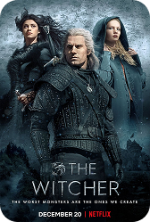
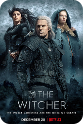

©2025 CD PROJEKT S.A. Todos os direitos reservados. CD PROJEKT, o logotipo CD PROJEKT, The Witcher e o logotipo The Witcher são marcas comerciais e/ou marcas registradas da CD PROJEKT S.A. nos EUA e/ou em outros países. O jogo The Witcher é ambientado no universo criado por Andrzej Sapkowski em sua série de livros.

 
